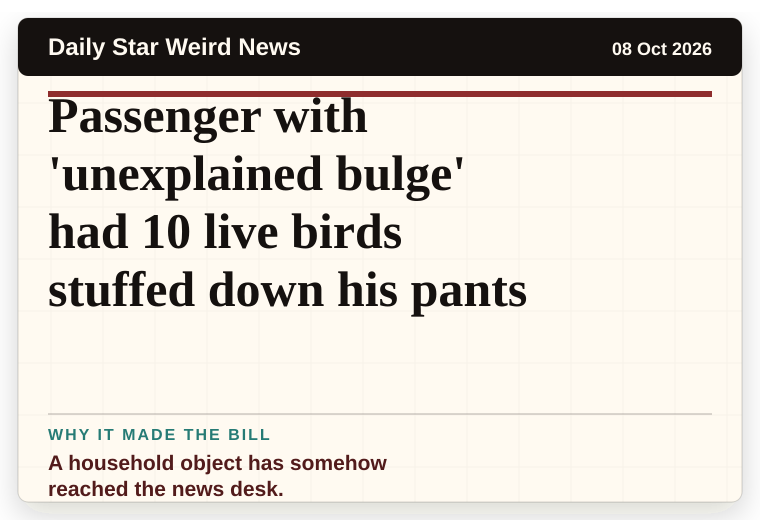
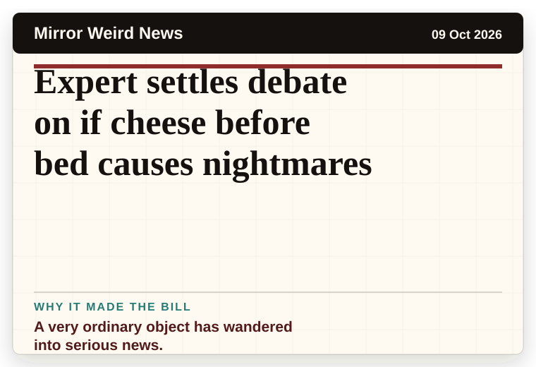
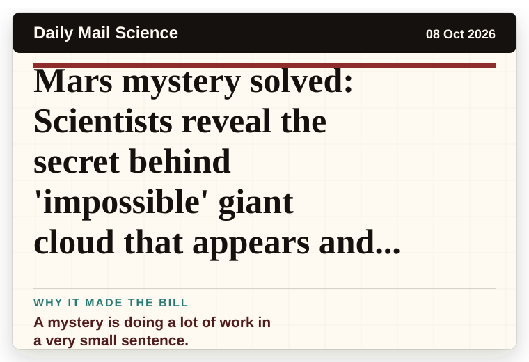
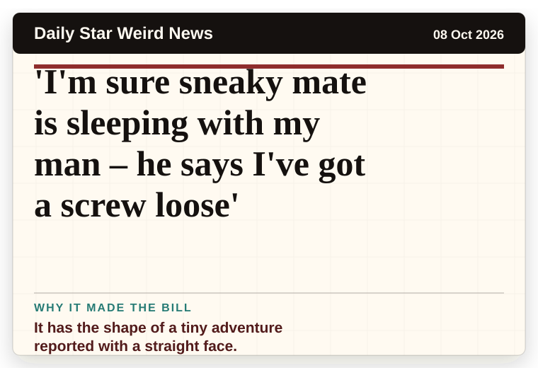
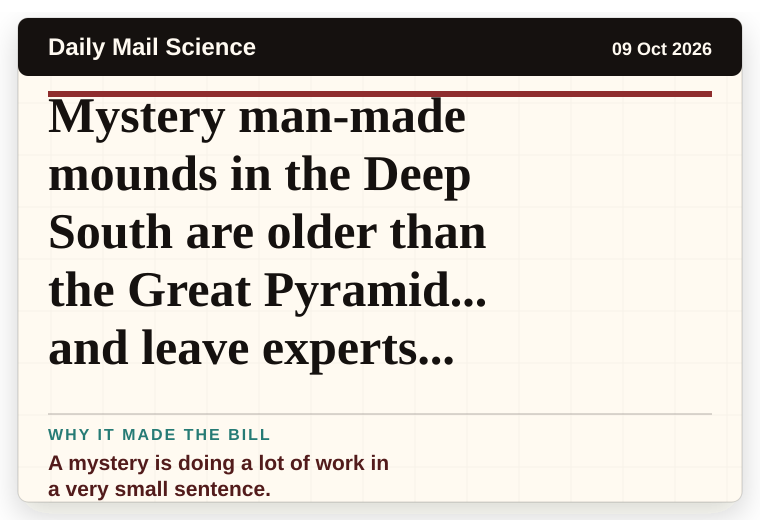
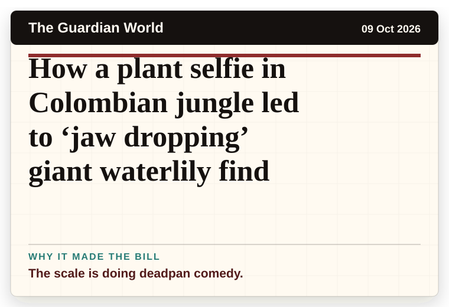
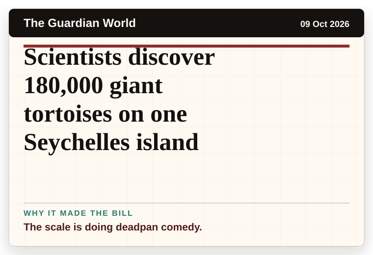

Daily Star Weird News
United Kingdom
Passenger with 'unexplained bulge' had 10 live birds stuffed down his pants
A household object has somehow reached the news desk.
The latest daily picks, linked back to the original sources. Search the room, pick a source, or follow a headline out to the full story.
Record updated: 10 Oct 2026, 07:42 AM AEST
Showing 12 headline candidates from the refresh run completed on 10 Oct 2026, 07:42 AM AEST.

A household object has somehow reached the news desk.

A very ordinary object has wandered into serious news.

The scale is doing deadpan comedy.

A mystery is doing a lot of work in a very small sentence.

A mystery is doing a lot of work in a very small sentence.

It has the shape of a tiny adventure reported with a straight face.

A mystery is doing a lot of work in a very small sentence.

The scale is doing deadpan comedy.

The scale is doing deadpan comedy.

The scale is doing deadpan comedy.

The scale is doing deadpan comedy.

The scale is doing deadpan comedy.